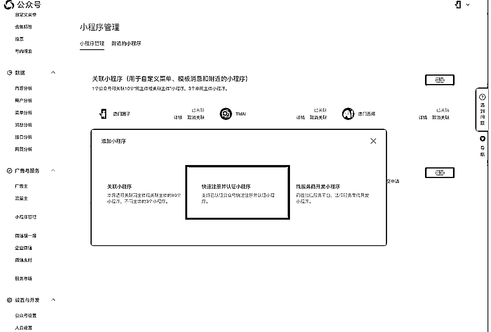
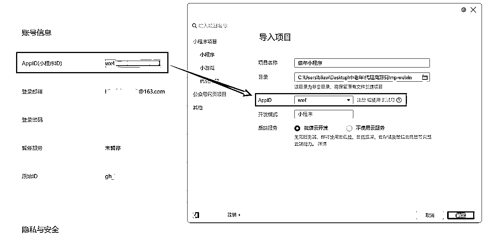
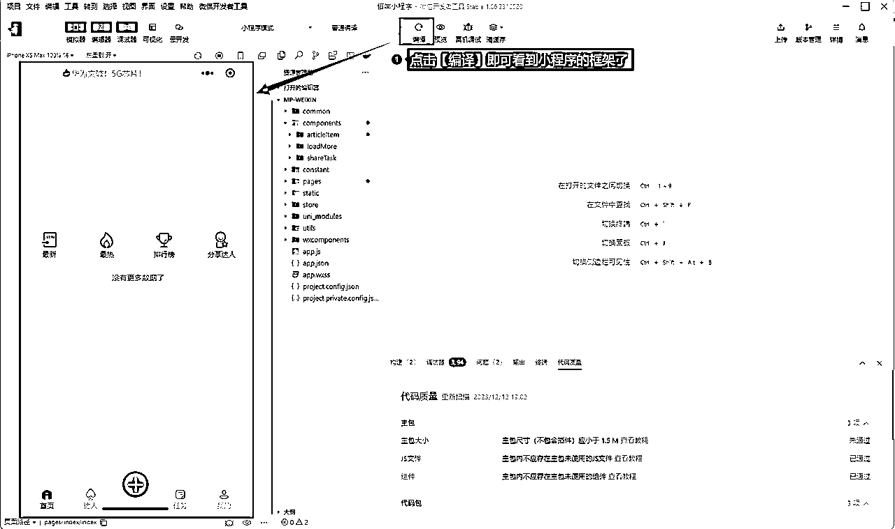

来源：https://xqulkwki4ye.feishu.cn/docx/GjYqdXZEmohXYTxqxcYciwwgnue
生财的兄弟姐妹，新年好啊~
我是唐门三叔，今天我又来做分享啦~
距离上次在生财分享被亦仁大大给加精，已经过去了一个月；
在这20天中，收到了很多圈友们的好评和点赞~
其实，现在的我，更像是一个被家长和老师们，双重表扬的孩子一样，很开心，很快乐，也更愿意努力的去做更多的分享，希望这次的分享能让大更从另一角度，更好的看懂，看懂互联网项目的玩法....
所以，我也越来越赞同生财的经营文化，这是一个很神奇，又让人很着迷的圈子~
通过自己的不断输出与分享，获得更多优质资源与人脉的链接机会~
恩！
关于牛皮的故事，我们后面找时机线下约个局，再一起吹哈~
今天先给大家分享一个我自己在操盘的项目，不，更为准确的描述应该是一份事业。
不敢说，这是自己压箱底的项目吧，至少是目前自媒体市场上主流乃至顶级的玩法之一。
先来看下这个小程序流量主的玩法，在内测期间一个变现情况：
2024年1月10号，正式开启这个小程序的内测，当天我还做了一场直播来讲解整个玩法：
刚开始的收入数据，因为没有公开上线，所以收入每天就是几块几十的到几百块的，也不是很多，自从在我的直播间公开宣讲以后，并结合了种子用户的玩法，当天就把整个收益拉到了1300多块，当然，这个收益，并非是我一个人的，而是有小程序用户的，我个人来讲，由于平台是起步期，所以，我把整个收入90%以上的全部回馈给了用户，我自己每天也就只拿收入的10%的样子。
当然，这份收入在咱们圈子里来说，很少，但我认可的价值在于整个项目的玩法，所以，收入和变现方式，也是一点一点积累起来的，因为用户的不断裂变会形成一个巨大的被动收入模型。
可能，看到这里你还是比较模糊，没关系，下面我针对此项目的整个玩法，梳理了一份详细的实战过程，大家可以跟上我的思路，一起来感受一下，一个互联网产品从0-1，再到变现和运营的整个过程，看似很难，需要做很多事情，实际上，只要你做过任何一个互联网项目，再用旁观者的角度去看待这个玩法，就会显得很容易和清晰了。
微信小程序流量主自动裂变终极变现玩法，到底是一个怎么样的玩法呢？
我又是如何通过，这个玩法来进行持续被动变现的呢？
请允许我用五句话来简单概括一下：
第一句：这是一个什么样的搞钱的东西？
答：一个中老年的微信图文小程序
第二句：小程序的内容怎么来的？
答：互联网采集的10W+文章
第三句：小程序的用户怎么来的？
答：通过1个种子用户，自动裂变出10个，100个蒲公英种子用户。
第四句：小程序的用户为什么愿意裂变？
答：因为分享文章到微信有手动收益，邀请种子用户可以实现被动收入。
想赚多少钱，自己定，目前日收入最多10元，最高200元；再多了商业模式还不成熟，我能力也有限。
第五句：这个玩意儿，到底怎么挣钱？
答：主要是通过用户想每天赚个买菜喝茶的钱，从而进行文章自发自主地分享行为，为小程序文章中的图文广告提供了曝光量，以及为文章中的视频广告提供了点击观看量，从而获得了多份广告收入。
在这个小程序中，有平台方，有分享达人，有种子用户，还有炮灰用户等，假如一个用户看了三篇文章，文章中，有图文广告和视频广告，一共产生了10块钱的收入，那么，我目前的分成比例是：
平台方：20%
分享达人：70%
种子用户：5%
下线种子：5%
嘿嘿，你看懂了不~~
小程序流量主可通过接入广告组件，快速将小程序内指定位置分享给广告主作广告展示，按月获得广告收入。
流量主！
微信流量主！
小程序流量主！
................
我们通过上图可以看到，微信旗下产品体系中，一共有四种流量主的玩法。
目前在我的这套系统里，一共有三种小程序流量主的广告变现形式：
小程序开屏广告、图文广告和视频激励广告，如下图所示：
原来的时候，如果你有已经认证了的微信公众号，可以使用微信公众号的资质进行申请认证：


这样注册可以免掉300元的小程序认证费，但自从小程序开启备案要求以来，小程序要想备案必须要认证才可以，尼玛，腾讯这绑架式的销售真够QD的，哈。。。光这备案的小程序认证一项，腾讯的第三第四季度财报数据，又会特别的好看了。

其实注册微信小程序，如果你注册过微信公众号的话，就特别的容易了。
第一步、登录公众号官方网址：https://mp.weixin.qq.com/
选择小程序，点击进入：
再选择【前往注册】，进入新的注册页面：
按下面的步骤，填写好相关信息就可以了，注册还是相对容易和简单的：
注册成功之后，就会进入小程序页面，看到如下的页面信息，这样的话，你的小程序就注册成功了：
首先，需要填写小程序的信息，像名称，头像和简介，在此页面点击【前往填写】：
小程序的名称，一定要显示【你的名字可以正常使用】绿色字样，才说明你的小程序名称是可以用的。
接下来，需要完善小程序的头像和小程序介绍，没有问题后提交等待审核即可。

前面我们有讲过，现在微信小程序要想备案，就得必须先完成小程序备案才可以，既然无法避免这个认证，那么就踏踏实实的认证好了，下面我们来说下整个小程序的完整付费认证流程，非常的方便，几分钟就能完成了。
我们在小程序的首页面，点击绿色的【去认证】按钮：
然后进入到这个微信认证的专项页面之后，再次点击【去认证】：
勾选同意后，选择下一步：
根据系统提示，一一的填写完善好小程序的各项信息，之后支付300元的认证费用即可：
相关认证资料提交注册以后，这里会显示1-3个工作日审核完成。
实际上几个小时以后，第三方认证机构就会给你打电话核对信息。
进入审核流程以后，审核客服机器人会给你打电话确认相关申请资料的，如实回答即可。
如果没有问题，一般几个小时就会通过认证了。
小程序备案划重点：
如果你的（个人、个体户、企业）主体下面有已经备案的网站，需要确保网站能打开，才能顺利的完成小程序备案，如果你的主体以前备过案，建议搞个相关的模板程序上传到虚拟空间或服务器上，临时开几天，等审核过了，再删除也没有问题，但是，如果你的主体备案域名访问不了，是通过不了的，这个点，大家自己把握一下。
提交小程序的备案前，必须要通过微信认证，不然你是提交不了备案信息的。那么我们在上一步，已经完成了小程序的微信认证，接下来，只需要在首页，直接进入小程序的备案流程即可：
点击小程序备案模块右侧的绿色【去备案】按钮后，进入验证备案类型：
主办单位性质，你是个人就选择个人，是企业或个体就如实选择就好，然后上传执照：
小程序主要经营的是：互联网美文内容分享，如情感故事、早安祝福等文章；
最后，我们在提交小程序备案前，需要下载一份备案承诺书，填写好信息拍照上传就好。
提交以后，就会进入微信平台的初步审核，只有微信这边通过了备案的初审以后，才会自动帮你提交到管局审核。
微信平台通过初审后，会自动提交到管局审核，一定要看短信。
短信验证通过后，将会自动提交至管局审核小程序备案信息：
在浏览器中输入短息信中的管局网址，选择导航菜单栏上的【短信核验】：
输入你验证码、手机号和身份证后六位，进行短信验证即可：
现在管局审核，基本1天左右即可完成备案的审核，这速度也是中国现在的速度，太帅了。
好吧，前面我们经历过了，小程序的小册、微信认证和备案审核三个步骤之后，接下来我们就需要来开通小程序流量主了，只有开通了这个，我们的所做的一切工作，才会有收入进帐。
当满足以下条件，小程序开发者即可申请成为流量主：
就开通条件而言，小程序流量和和小游戏流量主，无疑是最高的，需要UV大于1000+
100人，我们发几个作品就搞定了。
500人，我们花点小钱儿就搞定了。
那1000人的UV条件咋办？一样的，花点小钱儿也能搞定：
但是，我做这个全凭实力，一毛钱没花，在我的微信群和朋友圈广交好友，群发了两天搞定了1000+的UV数据：
然后，在小程序左侧的菜单栏中，点击【流量主】进入：
当符合流量主开通条件时，这个【开通】的按钮就会变成绿色。
我们点击绿色的【开通】按钮以后，再点击【完成】，确认流量主的使用主体以后。
最后，就可以成功开通小程序流量主啦！
但是，在这里我们需要使用管理员微信扫码绑定【微信广告助手】，以获得每天的流量主收益数据报告，以前是每天中午12点左右会推送昨天的收益数据，现在微信改版了，每天早上大约七点半左右就会推送了。
完成流量主的开通以后，我们进入流量主，在这里，要特别的去看一下：
《流量主行为规范》https://ad.weixin.qq.com/docs/74
温馨提示：开通流量主功能后请及时补充财务资料，以免影响结算。
呀！
终于来到了我们的正题，此处好想加个表情啥的，无奈飞书咋不支持呢？
目前我有一个私域IP，名为：唐门三叔
所以，我也顺理成章的搭建了一个互联网的轻创业社群，原来是叫唐门社群的，后面开发了自己的社群小程序以后，就做了整体的升级，下面放上几组我的社群小程序UI设计图：
关于此时升级，我曾在公众号曾写过一篇文章来详解，有兴趣的朋友可以入此链接移步阅读：https://mp.weixin.qq.com/s/6Hfy11JhPvwd7Xu14ParKw
唐门社群成立以后，有事没事儿的带着社群里的伙伴们，一起做做副业项目实操，几乎做到了每月一期项目上实操的样子吧，来，再上一组图：
在带领社群小伙伴们，进行副业项目实操过程中发现的问题：
1）七成以上用户，基本都有自己的主业，没有过多的精力去操盘副业项目；
2）八成以上的用户，基本都没有在互联网的项目实操过程中，拿到过正反馈；
3）六成以上的用户，基本都在互联网的副业项目学习过程中，被割过韭菜；
4）七成九以上的用户，执行能力相当的差，或者说，真的就是在做，只是在做，不懂得思考；
5）过半数的社群用户，指望着付费一两百元，就想改变副业收入或产生了一夜暴富的幻想；
6）大部分用户，对于互联网副业，是存在真实需求的，但没有路子，缺乏信息差共享链接入口；
7）社群的大部分用户，更加喜欢被动的收入，也许这也是人性所驱使的心理和现实问题；
8）社群的交付端，存在严重的交付能力、售后与对接的服务人员不足的问题；
9）社群的交付服务，多数来源于第三方老板的团队项目，毕竟不是自家孩子，用心不够。
....
关于社群交付，我记得亦仁大大说过一句话：叫做超预期交付。
恩，超预期交付服务，是社群口口相传的必经之路，可我仍然在路上。
鉴于以上在社群交付和运营过程中，发现的问题，也对很多次实操做了严格的复盘，最终我决定，换个思路。
也就是说，不要一开始就想着带大家挣钱，挣很多钱，因为很多小伙伴，还没有互联网的副业项目实操经验呢，如何才能做到一实操就能变现很多钱，即便是百分百可以做成功的项目，也一定会有人挣不到钱。更何况是在这种相对比较卷的国内副业市场，拉出任何一个项目，操盘的人都有大把。
所以，我降低了对实操项目的变现金额，以日收入三五十为目标的同时，提升社群成员的认知。
很多人，可能会想，一天赚50够干嘛的？
其实不然，一是副业，增加收入嘛，多少并不重要。
二来，不要小瞧这日收入50元的小目标，如果能稳定实现，也是不得了的事情，必竟咱们央央大国，目前月收入不足1000元的同胞，有6.1亿，新闻原文链接：https://new.qq.com/rain/a/20231031A05MTS00
这个时候，我的内心似乎激发了一颗熊熊燃烧的爱国火种，似乎有种声音一直在激励着我说：
我要带领10万人，通过互联网实现日收入50-200元！！！
哈。。。这牛皮让我吹的~~
这种口气，似乎是某位互联网大佬曾经的豪言壮语。
如果这件事儿，放在线下实体中，从你吹牛到实现的这一天，你一定会成为当地政企中的明星人物。
而如果这件事儿，放在线上互联网的副业赛道中，从吹牛到实现的这一天，那还得了，按幸存者偏差去计算的话，这个人数最起码得覆盖刚才几百万人次了。
敢不敢想的再说吧，先干起来再去幻想更多的美好！
这也是我做私域一年来，屡试不爽的制胜法宝，先通过“吹牛”的方式放出消息，再倒逼着自己不断执行与输出，以此来为自己吹过的牛买单与交付，实事证明，这一个方法是有效的，因为人的惰性嘛，我也有，所以，我本后山人，，，，那啥那啥的，对吧，哈。。。。
于是我便踏上了，只为寻找一个人人只要去做了，就都能挣到钱的小项目之路便开始了。
为此，我废寝忘食的奋战了几个星期，最终我收集了差不多有几百个这样的小项目，如下图：

在收集整理日收入50元的小项目过程中，发现了所有项目的一个共性：
互联网项目的共性：
就像现在的外卖员工作一样，整天累个半死，却吃不饱也绝不会让你饿死！！！
尼玛！！！
尼玛！！！
尼玛！！！
尼玛！！！
尼玛！！！
...........
在连续骂了几天的娘之后，我在微醺的状态下开始自我反省：
1）互联网项目，没有哪个是挣钱的！
2）互联网项目，没有哪个是永久可做的！
3）互联网副业，是存在窗口期的，后居者只能吃屎！
4）如果总是拿着这样的烂玩法去经营社群，势必会砸烂自己的口碑！
5）就算百分百会成功的副业项目，一样会有人做不起来，搞不到钱！
6）项目永远摆在那里，做的人却是一波又一波，殊不知，就像中视频一样，我都退出半年多了，仍然有人不断在外付费被人割韭菜，信息差认知很重要！
7）操盘项目的人，又参差不齐，认知不一、能力不一、水平不一、执行不一等等。
8）如果没有持续的利润驱使，再牛的人也会在坚持一段时间之后，就会乖乖的放弃。
........
那有没有一种长效机制，可以让一个互联网项目可以持续的产生收入？
比如，在满足了某个特定的条件下，可以拥有源源不断的被动收入？
比如，在某个阶段用心付出了，就可以拥有源源不断的躺赚收入？
有吗？
我翻箱倒柜，排山倒海，在整个大搜索和大排查了一通之后，竟然在我最熟悉的互联网中一无所获！！
2023年年中，参加了生财有术的一期航海：公众号流量主
通过自己的实操实测，拿到了非常不错的结果，当时还在我的微信公众号唐门三叔，做了分享：
我花了12天的时间，搭建了一个月收入11834块的公众号。
以上两张数据是我昨天查看收入的时候，在手机流量主小程序中截图的，这个帐号从我7月13号开始发布第一篇文章以来，坚持日更了12天后，
在7月25号入池，7月26号开始看到第一笔的收入：是2.15元
后来，开始成倍的增长，一直到现在的稳定收入，这个帐号平均第每天的收入已经稳定在了300元左右。
在这期间，我还开办了一个名为《自媒体GPT》的公众号流量主实操训练营：
3980元的对外报名价格，招募了几百+位学员：
这样的训练营，我一共开办了两期，由我通过直播教学的方式，带着兄弟们一起干，整个训练营的变现率非常的帅，后面经过统计，已经达到了6成左右，还有十几个小伙伴，搞起了工作室，手上掌握着三五十个流量主的挣钱号，对此成绩，我很欣慰。
但是，问题也来了！
剩下的四成左右，没有挣到钱的是什么原因？
问题出在了哪里？
我们排除10%的同行，过来套取技术和GPT创作指令的。
我们再排除10%的懒学员，或者说遇到了困难就没执行和坚持下去的。
那还有2成左右的用户，没有拿到变现结果，问题出在了哪里呢？
问题一、公众号非正式公域平台，流量入口有局限性。
问题二、新号起号入池难度大，如果坚持日更一个月还没有入池，学员大概率会放弃坚持。
........
针对以上问题，我重新做了思路调整：
那有没有可以快速入池的方法呢？
在生财看了很多的帖子，快速入池的成功案例很多，但需要付出的也太多了。。。。且并不适用于所有领域的帐号，只能是做为一种认知和经验给收藏起来了。
无独有偶，嘿嘿~~~
在某天某个时间，逛生财大集的时候，发了田老师分享的关于小程序流量的帖子：
帖子原文：https://wx.zsxq.com/dweb2/index/topic_detail/181148842244512
哇哦，马上联系了田老师，一气呵成！
搭建了自己的第一套中老年图文小程序，并开通了流量主：
田老师的强点小程序，在广告和盈利方面，已经优化到了极致！
但是，在流量获取方面，我还是遇到了问题，因为小程序基本不能靠自然搜索的流量去变现，那么，就只有两条路可走：
一是付费投流
二是手动加群推广
第一种，付费投流，我目前还没有去测试，看过类似的反馈，也是个技术活。
第二种，手动加群推广，一般是需要去找同行或那些中老年的微信交流群，去分享自己的小程序文章到他们的微信群，这么做有种到别人的地盘上抢人、抢粮、抢钱的感觉，一般发了分享之后，99%的概率，会被群主临门一脚再无下回，虽然微信群内的消息，群主无法像抖音粉丝群里那样可以撤回，但是，我情愿他们能撤回而不去举报我的小程序，小程序被举报几次后，从限制被搜索到彻底被平台封禁，也就是那么一段时间的事情，这个虽然在前期小程序不用备案的情况下，所以无所谓，封了，那么我们就再搭建一个呗，反正不要钱，对吧？
但是，小程序要求备案以后，如果你的小程序封了，这个损失的可就不是一个小程序帐号的问题了！
......................................................................
1）同一主体下的小程序注册数量，减少了。
2）为了备案，花了三百大洋认证的费用，也没有了。
3）同一个主体，频繁出现小程序帐号封禁的问题，如果主体被和谐了，你就嗝屁了。
不过，尽管如此，小程序流量主的eCPM（千次展示单价）可比公众号流量主的高的太多了。
所以，我想起了《罚罪》中赵家老爷子说的那段关于资本论里的话：
来，一起重温一下资本论的经典详解：
三叔笑了......【此处有119个偷笑的表情】
严重了！
小程序流量主的eCPM与公众号流量主的eCPM相比，虽然高了不少，但也只是不到50%的比例。
听好了，是比例而非利润！
所以，我们这点小钱与赵老爷子所说的资本论，还相差甚远，更是范不着去冒着被斩首的风险干这事儿了。
哈~~
但，这也证明了一件事儿，在一个同样的项目操盘沙盒中，如果付出是对等的，而利润高出了不少，大部分肯定都会选择利润高的，只有少数人选择利润少的而稳定的。
其实不然，不管是微信公众号的流量主或者是小程序的流量主，都没有稳定一说。
因为啥？
因为，流量主机制，在今年，一直在变。
如若不信，可以问问那些做过许久的流量主前辈们。
按理说，一个公众号，起号成功，打进了推荐流量池，只要内容没有问题，就应该会有源源不断的流量涌进来，同时，我们也可以获得源源不断的收入，但实际上呢：
今天你的流量主收益，可能是1000+
明天你的流量主收益，可能是100+
这个的变化，应该是所谓的自媒体平台的流量机制或割韭菜机制了，懂的人都懂，咱就不分析了哈~
OK，我们来综合分析一下：
所以，我们遇到的问题是：
小程序流量主，因为激励视频广告的附加，我们的单向广告收入确实是增加了不少，但是，因为我们的引流手段存在一定的弊端，所以会在一定程度上造成我们的小程序被投诉、被举报、被封号。如果能解决小程序的流量问题，那么，整个小程序流量的项目玩法，是不是就能形成一个优秀的循环链路，从而可以获得源源不断的流量和收入呢？
只要解决了流量的问题，那么这个项目的玩法，是不是就可以复制到我的社群给会员们免费使用，让大家以分享达人的身份切入平台，根据自己的目标收入，建立对应的种子用户，即可形成裂变来完成梦想中的睡后收入呢？
嘿嘿~~
有戏！
继续尾随深入，，不，不，不，应该是继续深挖这个玩法呗！！
OK，最大的问题来了！
俗话说的好，生意的本质是：产品+流量=变现。
产品：图文小程序
流量：流量怎么来呢？（上面加群分享的路子不太好走？付费吗？还有没有更好的路子，可以尝试一下？）
为了解决流量的问题，我曾不止一次的在每天回家路上，绕行思考小区两三圈，然后把自己思考的东西，通过我自己和自己的不同QQ组成的一个QQ群，发在这个群里，不论在家里电脑上的QQ中，还是我手机上的QQ中，以及我办公室电脑中的QQ中，只要登录都能看到自己的所有思考记录。
放两张截图，证明我自己真的很认真的思考过，哈。。。啥人啊这是：
OK，如此一来，貌似我的流量问题就可以解决了，如果你还没有看懂的话，去倒杯咖啡，我们下节继续聊，重点来聊，我是如何设计这套系统的内容逻辑和流量逻辑，以及变现逻辑的。
我们先来回顾一下，我的本篇文章开篇总结的五句话，不知道看了这么多东西的你，还记得不？
请允许我用五句话来简单概括一下：
第一句：这是一个什么样的搞钱的东西？
答：一个中老年的微信图文小程序，未来是一个品牌APP产品。
第二句：小程序的内容怎么来的？
答：互联网采集的10W+文章
第三句：小程序的用户怎么来的？
答：通过1个种子用户，自动裂变出10个，100个蒲公英种子用户。
第四句：小程序的用户为什么愿意裂变？
答：因为分享文章到微信有手动收益，邀请种子用户可以实现被动收入。
想赚多少钱，自己定，目前日收入最多10元，最高200元；再多了商业模式还不成熟，我能力也有限。
第五句：这个玩意儿，到底怎么挣钱？
答：主要是通过用户想每天赚个买菜喝茶的钱，从而进行文章自发自主地分享行为，为小程序文章中的图文广告提供了曝光量，以及为文章中的视频广告提供了点击观看量，从而获得了多份广告收入。
在这个小程序中，有平台方，有分享达人，有种子用户，还有炮灰用户等，假如一个用户看了三篇文章，文章中，有图文广告和视频广告，一共产生了10块钱的收入，那么，我目前的分成比例是：
平台方：20%
分享达人：70%
种子用户：5%
下线种子：5%
嘿嘿，你看懂了不~~
是的，以上，就是我的整个系统运营逻辑，现在看是很清晰的，但这个产品从0-1，从无到有的设计生产的过程是非常痛苦的，不，不是痛苦，应该可以说是：痛并快乐着。
同样，我在在这个设计产品的阶段做了三件很重要的事情：
第一件事情：确定了我的整个系统调性：内容、流量、变现；
第二件事情：梳理出整个系统的实现流程后，找技术做了功能实现方面的咨询；
第三件事情：请教了几个前辈，而后结合他们给出的建议，找GPT帮我设计出了整个系统的四方运算核心逻辑；
整个产品设计的过程，我截图了几张比较基础的贴了上来，某些太过于关键性的数据逻辑，我就打码了，望理解：
包括元旦前，我发起内测以后，也有不少小伙伴，过来咨询它的运算逻辑的，我只能说声：我很Sorry呗【此处加个翻白眼表情........】
其实，做过产品经理的小伙伴都知道，一个产品的设计，有了核心骨架与灵魂之后，其它的就是像造人一样，给他填充好血肉与躯干即可。
以下是我为整个小程序系统，设计的UI草图，哈。。。丑陋之极：
当时的定位，非常的明确，就是对标中老年用户，所以，在系统的UI设计上就大号字体了一些：
以下是我的第一个版本UI设计样式：
设计完了之后呢，才发现这玩意儿，有点怪怪的呢，说不上哪里不好，就感觉不是我想要的。
于是，果断的发起了一个完整的UI设计调整说明，最后做了较大的改版：
以下是改版后的最终效果图，来一起欣赏一下：
在拿到了相对较为满意的UI设计图之后，接下来就是技术开发的过程了，由于前期在主要功能方面，已经和技术术了事先沟通，所以在整合功能开发与UI前端设计图上，并没有花费太多的精力，花了两个多月的时间就开发出来了。
拿到以后，兴奋了好几天，各种测试，各种沟通调试，前前后后，修改调试了近50次。。。。
因为，我在技术方面，几乎小白，只看提懂HTML代码，其它的一窍不通，所以，在整个产品的开发过程，我只提供了我的思路，想法和建议，具体的由技术来实现。
正所谓：专业的事情，交给专业的人，方能事半功倍。
恩，有道理！
最主要的是，我个人还有很多工作要做呢，除了日常的社群运营、团队管理、项目交付、课程录制、各种无脑答疑等等，一个人的精力是有限的，所以在2023年，我都没有正儿八经的去做社群引流，光在这里搞产品设计和开发测试了，做了一年的私域，还不如人家做了几个月的，实在是惭愧。
但我坚信：
有好的想法和路子，就应该立即去实操、测试和修正，直到落地，搞钱！
所以，少TM的跟我扯淡，谈梦想！
这才是一个互联网人做项目应该有的态度！
以上语录，送给各位兄弟姐妹，共勉！
此话，也已经被收藏进：唐门三叔经典语录【此处加入118个偷笑的表情】
2024年了，为了实实在在的证明，我只对互联网搞钱感兴趣，我特意更换了一个俗到家的头像，以此来鞭策自己：
其实，真实一点又有啥不好的呢？
新年快乐，送个新年头像给大家！
这个头像很现实，也很实用，我自己也换成了这个头像，什么这个福那个福都TM的太扯太假，实实在在的，毫不遮掩的告诉全世界，我TM的就想搞钱，做最真实的自己，就够了，想那么多干吗？
大家都知道，所谓的生意，不管是线下还是线上，要想获得持续稳定的变现，都离不开产品和流量大端的支撑。
那么，在我所设计的这个生意中，产品是什么呢？
首先，这套系统中的产品，是一款：中老年的小程序，未来它可以是APP，也可以是一个社交门户网站。
目前在这套中老年的自动裂变小程序中，集合了大量的各领域分类爆款文章，比如，情感、养老、国学、摄影、民生、奇闻、美食、婚姻等等12个+的分类，并在文章中的顶部内置了图文广告：
在用户看完本文后自动切换到下一篇文章，并弹出视频激励广告，因为用户在看完一篇文章后，系统会弹出一个结话框：
【提现至微信】
会获得对应的金币奖励，这个奖励的金币是可以兑换成现金提现的，至于奖励数量，我们可以在后台自定义设置；
【看视频继续阅读】
这个是我们重要的收入来源，因为我们的内容均为10W+的文章，所以文章的可读性均是得到过市场验证的。这样的文章更能激发用户的阅读兴趣，那么【看视频继续阅读】的被点击率则会变得更高，我还在思考一个问题：
后台可以设置，是否保留或者可以选择是否开启这个弹窗提示；
方案一、因为开启的问题是：用户多了一步点击的选择，此时，用户可能会选择X掉退出。
方案二、如果选择不开启，当用户阅读完一篇文章后，自动弹出激励的视频广告，客户有可能会不明白所以然，也会流失；
现在的问题是：需要通过不同的方式，来测试用户的流失率，哪个方案更低，就用哪个。
继续我们的产品逻辑：
只要有用户通过我们分享到微信中的小程序链接，点击阅读了我们小程序中的文章，我们就可以获得一份收入，目前这份收入实测数据是：ecpm的千次展示单价在30-150元左右，图文的会低一些，而视频的则会更高一些，整体是在这个区间。
在获得收入之后，平台方、小程序的分享达人和他的上级，以及阅读用户四个角色来按比分配这份收入；
目前我在后台的设定利润分配比是：
平台方：10%（小程序的拥有者）
分享达人：80%（分享文章到微信给好友的人）
达人上级：5%（分享达人的上级）
阅读用户：5%（外围基础用户）
此比例在后台，可以自定义设置，我个人的建议是，前期为了吸引用户，平台方可以少拿分成，或不要这个分成都没有问题，后面种子用户形成裂变以后，不愁没钱赚，关键的是这份收入还是纯纯的被动收入。
OK，最后，我们梳理出了我们的产品：中老年流量主自动裂变图文小程序
哇，好好听的名字啊，关键词：中老年、流量主、图文、自动、裂变....
刚开始听着还行，但随着认知的不断提升，感觉越来越俗气，后来在考虑到受众群体的喜好以后，还是改名为叫：朝花夕拾，这个名字最起码知道的人很多，也符合中老年群体的小文艺范儿。
后来，在编写搭建技术文档的时候，才发现这个名称是不错，但这个名字中老年的大爷大妈们是看不到的。
因为我们前端只是提供基础分享变现的功能。
这个名称呢，又是放在小程序代理商的管理系统中，实际上是给小程序拥有者也就是代理商或管理者们看的。
那，有意思了！
必竟是用文章来搞钱的，以文生财的事儿，不知道怎么着了，我的脑子里，就冒出来一个叫：文财神
的词儿！！！
好吧，给我的产品一个最终的定义：
《文财神自动裂变管理系统》
当时呢，随手做了一个LOGO设计，网图+文字组合（域名无效，LOGO草图）。
于是，我的产品呢就这样哇哇落地，出生了，整个过程，像极了女同志的十月怀胎，痛并快乐着。
在此，作为纯爷们的我，向所有曾经历十月怀胎的女同志，致敬~
对呀，孩子有了，得喂养啊，咱一个纯老爷们也没有奶水啊，咋办呢？
对啊，产品确实是有了，那么内容从哪里来呢？
这个简单，一句话告诉你答案：
通过技术手段，可以实现半自动和自动采集互联网上各个领域中的10W+爆款文章，自动发布到我们小程序对应的分类目录当中，这样不就可以彻底实现内容生产自动化，解放我们的双手了吗？
是的，我们也是这么干的！！！
目前提供了两种方式来解决内容生产的问题：
方式一、输入文章链接，手动采集编辑后发布。
方式二、输入文章链接，自动生成采集规则，自动采集，自动更新发布，全自动托管内容生产模块。
产品有了，内容有了，那么，最重要的一个环节，流量从哪里来呢？
要解决这个问题，我们首先得弄清楚，我们的目标用户群体有哪些，他们又都有哪些互联网行为和特点？
经过我本人（唐门三叔）在自媒体GPT项目中的大量数据验证，并结合身边的线下用户咨询等一系列的真实数据，最终得出一个，关于本产品的用户群体行为数据模型：
我们产品的目标用户群体：主要是40-70岁的中老年人。
用户群体的特点是：
所以，鉴于以上我们的产品特性和目标用户群体的行为特点，我设计出了一套完美的流量自动裂变模式。
下面，我们以代理商的名字叫张三为例，来详细拆解一下整个流量系统的裂变过程：
张三申请成为了《文财神自动裂变管理系统》的渠道商，搭建了一个属于自己的裂变小程序平台；
前因：
因为他的平台刚搭建没有人气，张三便邀请了他的母亲作为自己平台的种子用户，并通过平台的分享达人机制，成功的申请了分享达人的身份；
过程：
张三母亲只要将张三平台上的文章分享给她的微信好友后，当别人看了这篇文章，张三的母亲就会有一份收入。于是张三的母亲，每天都会将平台上当天更新的文章，通过微信分享给他的亲朋好友和微信群，不到一周的时间，张三的母亲帐号下面，便有了十几个好友，加入了平台的分享达人，而她这十几个好友所分享的文章数据和收益数据，便理所当然的被统计到张三母亲的帐号下面。当这十几位好友，在平台分享文章获得收入的时候，张三的母亲也会获得相应的分润比例。
结果：
这个平台之所以会不断的形成用户裂变，最主要的核心底层逻辑，就是因为他的裂变机制非常厉害，而当这十几位亲朋好友，通过自己的不断分享文章给他们的好友时，如果他们的亲朋好友因为看到了平台的分享达人活动，也自愿申请加入了平台的分享达人，那么张三的母亲仍然可以拿到一部分收入，这个叫做一分付出，三分收获，也是道生一，一生三，三生万物的道家法则终极运用。
一变机制：
我们假设张三的母亲，只邀请了十个好友成为分享达人。那么这十个好友将会被系统自动分配到张三母亲的帐号下。
二变机制：
当这十个好友，作为分享达人，每天在不断分享文章的过程中，大约一周左右的时间，每个人就又会邀请到至少十个以上的人，成为新的分享达人，并分别挂在他们的帐号下面。
漏斗算法：
此时，不管是张三母亲的这十个好友，还是这十个好友分享文章，所有获得的收入，张三的母亲都可以拿到对应比例的分润。
三变机制：
同时，张三的母亲作为种子用户，邀请了十个好友，这十个好友又分别邀请了十个好友参与进来，这时就已经在张三的平台上通过1个种子用户，自动裂变出来100个分享达人。
N变机制：
1个种子用户，可以在短时间迅速的成长起来，最重要的还是因为这个裂变模式设计的巧妙，虽然不是多么高明的玩法，但至少，让所有人都获得了自己想要的。当第一个种子用户完成100人的裂变以后，那么，张三所搭建的这个平台，将会迎来放量式的一个裂变期。因为现在他的种子用户，已经从1个人，变成了100个人，而这100个人会很快变成1000个人，1000人再裂变成1万人，十万人也只是时间的问题了。
所以，我们在这一阶段，将这个称之为：裂变的放量阶段，因为如此不断重复裂变，像极了我们的一生三，三生万物的道家所学。
好想上山去当个道士啊，哈。。。
天天研究道，研究道与法，研究道法自然。
听说还可以调养生息，所以，最近有种想出家当和尚，上山修道的想法！
不为戒色，戒酒，戒荤！
只想寻求一门，能可以长生不老或延年益寿的秘方~
看着自己每况愈下的身体和内脏，夜夜失眠：

看看医生的回复真的很神奇：多蹦蹦跳跳
别的回复，我就像没有看见一样，她是怎么知道我天天坐在这里工作的？
我从2008年开始互联网创业以来，一直坐到今天！
一坐就是16年，太恐怖了！
其实，说真的，我才是所有互联网创业人的真实写照，悲惨写照！
挣到钱了吗？
挣到了！
钱呢？
花了！
花哪儿了？
花在吃药上了~~~
殊不知，我们很多做做互联网的前辈，都和我的情况差不多。
在电脑面前坐的太久了，导致身体各方面都出现了问题。
建议大家，千万不要熬夜，千万不要天天坐着。。。。。不然身体早晚出问题。
所以，我很郑重的告诉自己，不，应该是警告：
再辛苦一下，熬完年前这几天把所有的产品和私域进量SOP梳理清晰，过完春节回来，每天要像公务员一样，穿着西装和大头皮鞋，嗒嗒嗒，在走廊踱步办公。早上去跑跑步，和大爷大妈们一起打打太极拳，遛遛鸟，白天就一直在办公室工作，晚上六点准时下班，下班了再去公园散散步，顺便和大爷大妈们聊聊我的这个产品，如何在家足不出户，就可以轻松实现每天挣个买菜钱：
“大妈，快来领鸡蛋了，扫码申请个分享达人，每天分享文章就可以挣个买菜钱.....”
“大爷，退休工资够花吗，老伴管的严不严，要不扫个码每天看看文章啥的，攒点私房钱买个小酒喝呗....."
...
好吧，不加班不熬夜，就是我2024年的目标，祝我早日实现！
重要的事情说三遍，你可别嫌我烦：
老子曾在道德经中这样写道 ：道生一，一生二，二生三，三生万物。
任何事物最终发展，都会形成一个自然的规律，这个规律在我的这套系统中被称之为：万物归一
万物，自然指的是那些源源不断裂变而来的用户流量。
那么，这些流量将最终通过这套系统转化为一样人人都喜欢的东西，
这个东西叫做：钱
.........
好吧~
我又俗气了，那接下来就认真的跟大家聊聊，这个文财神有何搞钱的能耐呗。
在整个《文财神自动裂变管理系统》的变现模式中，我们梳理出来了七种即时变现手段，可以最大化的保障你的生意有足够的利润和长久的利润输出。
变现模式一：小程序流量主基础收入
这一块是我们的小程序平台赖以生存，并贯穿始终的变现模式。
只要文章有人看，我们文章中的广告就会有持续的，源源不断的收入。
当然，只要有10个种子用户，其它的已经不是问题了。
变现模式二：小程序广告商单
当种子用户达到1000人以上，你就可以公开接商单进行二次或多次变现了，只要合法合规，广告类型不限，则收入无限，接商单八成以上的商单广告都是商家自动来找你对接的，商单的价格是随着用户数据不断增长而提升的。
我个人的经验是：
小程序的累计用户数在：10000+以上时，报价：3000元/篇文章
小程序的累计用户数在：20000+以上时，报价：3500元/篇文章
小程序的累计用户数在：30000+以上时，报价：4000元/篇文章
小程序的累计用户数在：50000+以上时，报价：4500元/篇文章
小程序的累计用户数在：10万+以上时，报价：10000元/篇文章
广告位展现形式：
1）图文贴片广告
2）整篇软文广告
3）轮番视频广告
4）轮番开屏广告
5）用户中心贴片广告
6）首页贴片广告
..........
广告商家类型：
1）各种家用产品的二流、三流商家
2）各种中老年群体用户的，针对性产品商家
3）各种中老年知识付费的，，，
...........
相信我，中老年的市场，在2024-2030年，将迎来井喷式的爆发！
希望，我的话，没有暴露过多的商机吧，不过，应该点的地方，已经到位，，嘿嘿~~~~
看这歌词，唱的都是啥呀这都是？
【趁青春要努力挥洒血汗，活着就要折腾不留遗憾！】
。。。。。
我还挥洒血汗呢，我这又不是在工地搬砖的！也不是在井下挖矿的！
难不成我天天坐在电脑前，
跟鼠标键盘拼个你死我活吗？
跟显示器，撞个头破血流吗？
...........


看文章也也挺累的，给你加个鸡腿娱乐一下吧：
2011年，我婚后在一个亲戚的办公室，用亲情价400元/月租金，换了两间办公室。
亲戚的女儿，经常来我这里玩。
她来了，就看到我坐在电脑前，一会打字，一会闭着眼睛睡觉。
后来，听亲戚说她女儿每次从我这里回家后，就跟他说：我姐夫天天在办公室玩电脑，都不好好挣钱的， 是不是我姐在挣钱养着他？
我听说以后，又气又笑！
我做的工作就是互联网搞钱啊，不用电脑搞，用啥搞睐？
难不成，在互联网上搞钱，我还得顺着网线，从电脑里把钱拽出来嘛？
谁说在互联网上挣钱，一定要面对面的谈生意，用现金付款啥的。。
我在互联网上挣的钱，都已经通过网络自动转进了我的网银了。
好吧~~
认知，决定了思维~~
变现模式三：中老年知识付费
这是一个新的风口，也是未来10年内，最爆火的一个流量赛道，我们通过这种裂变的玩法，悄然的进入这个市场，手里有了足够多的中老年用户，再做知识付费已经是水到渠成的事情了。这份收入可大可小，可短期可长期，具体的模式，我们后期会在运营中跟大家再详细反哺，现在你只需要知道有这么个事儿就行了，中老年知识付费，绝对是当下整个知识付费赛道中的什么海中的什么海了。
变现模式四：中老年电商产品
纵观现在的互联网，针对中老年做电商的产品，99%的都是忽悠，现在中老年人是我们值得尊敬和守护的一代人，因为总有一天，我们也会老去。而当你的小程序用户破万以后，你就可以在后台开启【甄选商城】的功能，每周用心的去筛选一些优质的商品，投放在小程序的购物模块，这一块的收入，同样可大可小，可疯狂，因为我们是要为用户负责的，必竟我们做的是长期可持续的变现收入，并不是一锤子买卖，所以，我们在获得了足够的用户信赖之后，需要更加用心的去经营这份来之不易的信任。
关于互联网的信任模型，我在私域课中，跟大家反复强调过很多次，因为互联网是虚拟环境，成交和转化率的首要条件就是解决信任问题，这一点，我再次强调一下，如果你想做大做强，就要对你的用户在信任事件模型中，付出10倍，乃至百倍的努力，来经营这份信任，口碑炸裂以后，你就是品牌之王。有了基础信任，有了口碑相传，不管你的甄选商城，是走的淘客模式，还是自营模式，千万不要忘记了我们的产品主要受众用户群体的行为特征，搞懂它，你的事业将会更加顺利。
变现模式五：小程序合伙人收入
讲实话，这份收入是可有可无的，如果你不是特别的缺钱，不建议使用这个变现模式，必竟和别人分钱，是一件很不爽的事情，但是，像我们这样的小程序系统，在发展和运营的过程中，你一定会结识一批志同道合的人，如果你真心愿意拿出一部分收入和你的伙伴们共享，你也完全可以通过招募付费合伙人的方式进行前期的变现，快速完成原始资本的积累。
变现模式六：小程序会员收入
未来在小程序的功能规划设计中，像付费会员、电商购物、社交等等功能，均会一一更新到位。
在未来很大的一块收入占比中，这套系统已经并不仅仅局限于小程序了，它已经变成了一个APP，所以，会员功能，将会是我们的重要收入来源，具体的细节，在开发前会完成市场和用户的数据调研。
变现模式七：中老年衍生服务
...........
变现的事儿就先说到此吧，因为如果你真的看懂了，中老年的市场机会，你就会发现，我只说这一句，你已经懂了千千万，因为在中老年的这个特殊群体中，可以变现的机会和方式，实在是太多了。
那在以上整个系统的介绍、核心裂变逻辑中，我相信你一定强烈的感受到了一个词儿：屌爆了
中国已经步入老龄化社会好多年，相关的服务、配套和人群的重视程度，都还没有跟上，或者说还没有被完全重视起来，我现在作为首批入局者，我坚信，未来我一定可以实现我的小目标！
哈。。。
吹个牛，别当真~~
是的，我更愿意将这套系统称之为：小愿望放大器，其实我们在认真分析和梳理了目标用户的需求之后，哪怕只是一个爱分享的优点，一个每天能挣个买菜钱的小愿望，被我们的这套系统，在经过三次技术上的裂变放大之后，你就会发现，用户们原来的小小愿望实现了，作为平台方有了内容，有了用户，有了源源不断的流量之后，疯狂变现已经是水到渠成的事情。
此时，我们看到的应该不仅仅是一个项目的玩法逻辑了，我更愿意亲切的，称这是一份可以改变自己人生轨迹的事业！
第一步、登录微信小程序 https://mp.weixin.qq.com/
第二步、进入左侧的开发管理/开发设置中获取即可
第一步、在小程序首页下载微信开发者工具
第二步、扫码登录后，在开发者工具中，点击+号

输入项目名称，这里可以任意自定义，主要是用来区分小程序的。
然后，选择小程序的源码目录，输入小程序的AppID【打开小程序左下角的设置页面即可看到】

如果出现下方的错误，则需要到小程序的，成员管理中，增加项目成员，为你当前登录微信开发者工具的微信。
进入以后，点击【信任并运行】
首先需要在开发者工具中，进入static/common目录，把此目录下面的两件文件：
variable.js
variable.scss
把以上两个文件中的appid修改为你自己的小程序APPid，然后编译即可。
登录小程序代理管理系统之后，你将会看到如下界面：
小程序代理管理系统中，需要你配置的项目列表：
进入基础管理-小程序管理进行配置
点击【编辑】按钮后，先输入带有*号的项目内容。
配置好【小程序信息】和【OSS配置】保存即可。
最后，再返回开发者工具，点击【编译】，即可看到你的小程序框架模样了。


结束语：
就这样，我从一个一无所知的互联网产品小白，技术小白，因为社群的原因，因为想带着社群的会员们在互联网上搞钱这个最原始的想法，一路发现并挖掘痛点，在经过一系列的分享之后，在今年从0-1的鼓捣出来了两套产品，一套社群小程序，一套文财神自动裂变系统，并独立学习跑通了，两个产品所有的搭建环节、试错环节、流量环节和变现环节~~
2024年了，我将带着我的所有产品和服务，继续奋战在互联网的搞钱路上，继续深耕！
这下更加有底气了，之前一直是单打独斗，熬过了黄昏，熬过了深夜和凌晨，这一次，我将继续颠覆自己的人生，必竟，谁的人生都不会白来一趟~~
嘿嘿~~
自夸一下：我发现自己，原来真的可以通过思考和行动，变现更加优秀耶！
有个声音在我耳边说：脸皮咋那么厚呢？左哼哼，右哼哼~~
加油，相信你也一定可以！


呼~
（唐门三叔，长舒了一口气）
那就轻松愉快的结束这一次长长的分享吧，希望没有累到你~~
如若有缘，期待相见！
唐门三叔
2024年1月17日